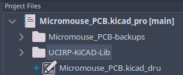
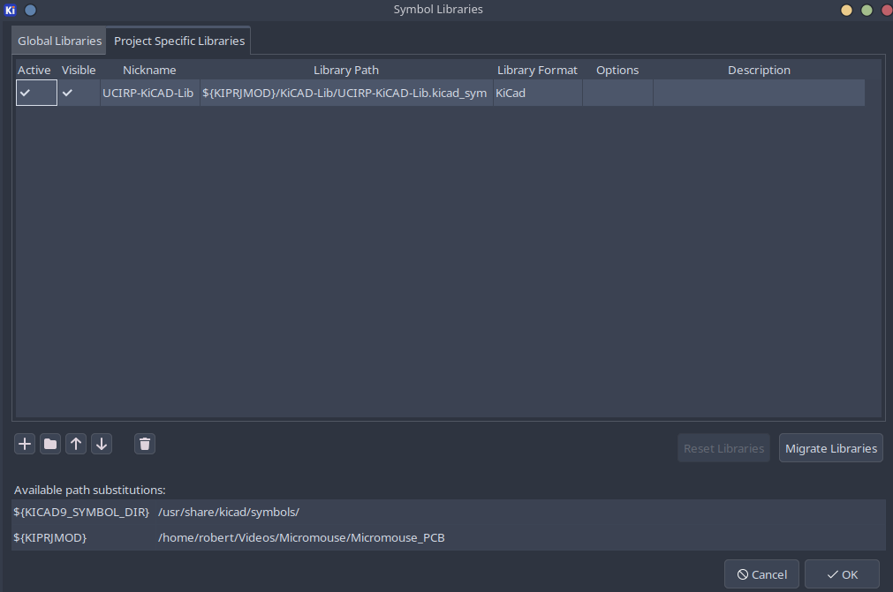
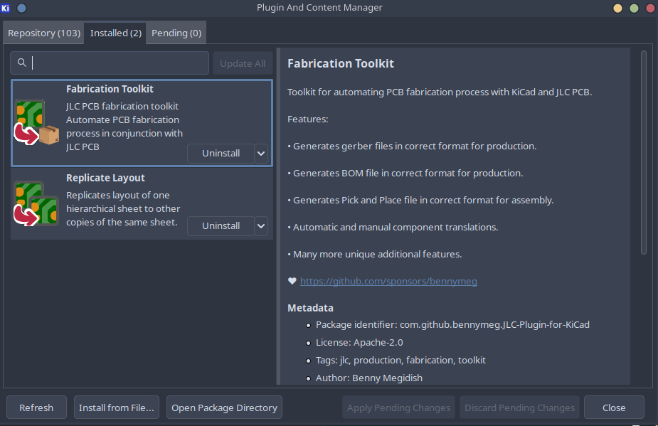
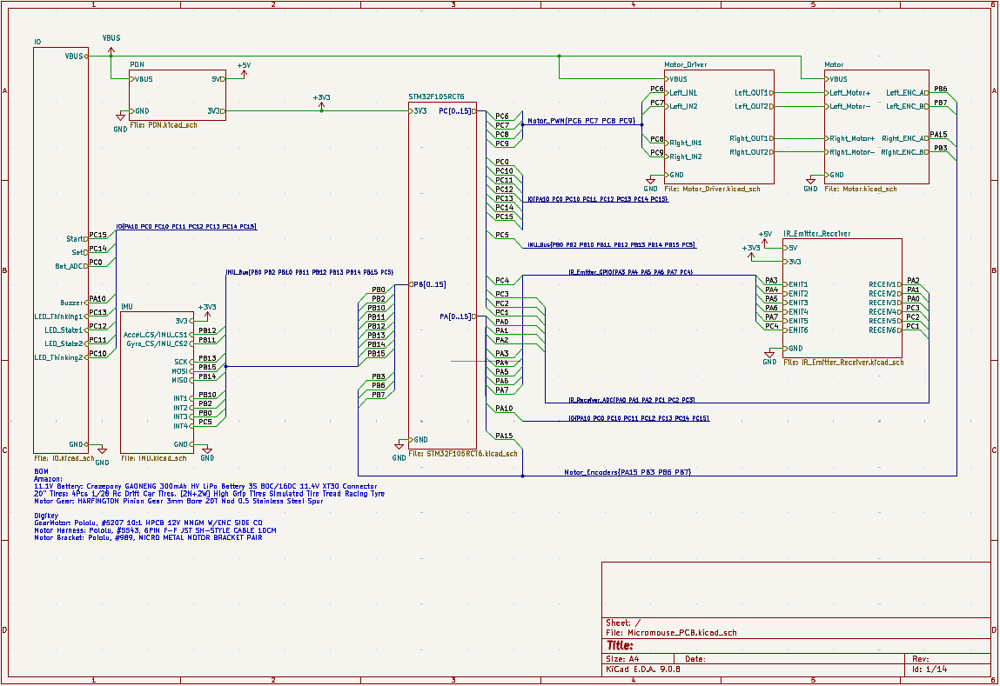
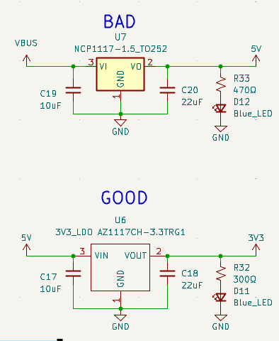

Hardware setup and constribution guidelines
UCI Rocket Project (Liquids) uses the most up-to-date version of KiCAD for our PCBAs. Additionally, we use JLCPCB as our main fabrication house and assembler for our PCBAs.
This will be a guide on how to setup a KiCAD project for the team and also some guidelines for the schematic capture.
Starting a KiCad Project
All of our hardware projects are version-controlled using GitHub. To get a new board started, follow these steps:
- Create the Repository: Create a new repository in our GitHub organization using the standard naming convention:
rocket#-name-hardware(for example,rocket2-ecu-hardware). - Clone First: Before touching KiCad, clone the empty repository to your local machine:
git clone <repository-link>
⚠️ WARNING: REPOSITORY INITIALIZATION
Always start with
git clone. Do not rungit initlocally.Note: We strictly use
maininstead ofmasteras our primary branch. Seriously, please do not push amasterbranch!
Setting up a KiCAD / a KiCAD project
KiCAD projects imports/setup
There are 2 imports required before starting your board:
- Custom Layout Constraints File (
.kicad_dru) - UCIRP's Component Library (
UCI-KiCAD-Lib)

Figure 1: Required project file/folder
Custom Layout Constraints File
The Custom Layout Rules are directly from JLCPCB's design tolerances for a standard PCB. The .kicad_DRU file can be found here: JLCPCB.kicad_dru
Copy this file into your KiCAD project and rename the name of the file to: "your_project_name".kicad_dru
The KiCAD project will not detect the custom constraint file unless it has the same name the project.
UCIRP's component library
Avionics has created its own custom hardware library for KiCAD with some of the components we assemble onto our boards. To add our KiCAD libary, run the following command while in you project's directory.
git submodule add https://github.com/UCI-Rocket-Project/UCIRP-KiCAD-Lib.git
A new folder should appear in your project, and now you can the add both the symbol & footprint libraries into your project.

Figure 2: Required KiCAD import library
⚠️ IMPORTANT: PROJECT SPECIFIC LIBRARIES
You must add the library as a Project Specific library local to the project's file path. If you add it globally, the project will not link the library for other team members when they pull the repository.
KiCAD projects imports/setup
Additionally, 2 extension that are basically essential for our KiCAD project:
- "Fabrication Toolkit" for JLCPCB fabrication files
- "Replicate Layout" for replicating layout of hierarchical sheet copies on the PCB

Figure 3: Required KiCAD extensions
KiCAD schematic styling guide
Some notes on how to work on your project.
-
Use hierarchical sheets to create block diagrams on the main sheet.
- It's industry standard to use hierarchy in the schematic capture of you engineering project. For KiCAD projects, use buses and hierarchical sheets to create a block diagram of how your PCB connects to each subcircuit on your board.
- This is an example Micromouse project that follows this standard. Use this project as reference:

Figure 4: KiCAD Schematic Example
-
No yellow backgrounds for components.
- While this is entirely subjective, our team standard dictates that all schematic components must have empty backgrounds for visual consistency.

Figure 4: KiCAD Schematic Example -
Do not attempt to make separate branches or merge
- Ensure local files are up to date before making changes. Merge conflicts are practically irreconcilable, do not attempt to merge.